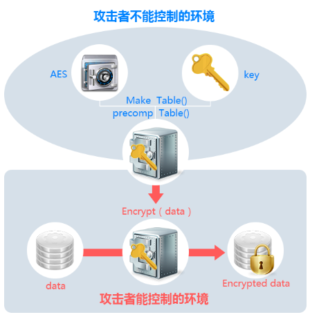

CSLG IT laboratory
安全密钥白盒
未目前使用的基于Key的AES、DES、SM4等传统加密算法已不再安全，攻击者通过控制软件的运行环境（如CPU、内存、寄存器等）实现对密钥的白盒攻击、破解
| 密钥面临的风险:
随着互联网技术的快速发展，许多新型的密码分析技术被用来破解加密算法。 Lookup table转换：将密钥转换为大量的Lookup table，构造复杂庞大的结构化查找表系统。
Lookup table转换：将密钥转换为大量的Lookup table，构造复杂庞大的结构化查找表系统。随机双射编码： 应用随机化、非线性化操作，对查找表进行随机双射编码，隐藏相关内容。
算法边界扩展： ：系统混淆增量少，对原程序执行开销无影响。
内外混编 :: 将加密算法边界由算法本身扩展到整个程序，实现对密钥的隐藏。
多层防护措施: : 采用多种安全技术集成，增强对密钥白盒环境下非法调用、注入、内存修改的防护。 
| 优势和价值:
为解决在不直接暴露任何密钥或数据的前提下实现对数据加解密，梆梆安全推出密钥白盒加密保护技术，从根本上防护针对密钥的白盒攻击行为。加密强度灵活可配：密钥白盒加密可以根据客户自身的业务需求和数据处理能力，配置不同的加密强度。
降低密钥管理成本： 密钥白盒加密系统可以释放固定密钥管理所需要投入的资源。
高安全性保护 ： ：对AES、DES、SM4等加密算法的Key进行了整体性融合，同时集成防调用、防注入等多种安全技术。
内适配多个平台:: 密钥白盒加密系统适用Android 、iOS、Windows、Unix、Mac OS X等多个平台系统
:应用行业广泛: : 适用金融、互联网、车联网、物联网、智能家居、政企等多个领域。
返回首页
cslgit©2016 Bootstrap 响应式网络安全服务 | 版权所有️